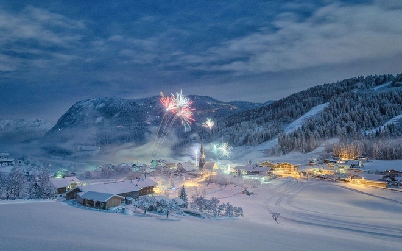

©Stefen,Winner,Austria National Awards 2016 Sony World Photography Awards
Are you Austria's best Photographẻ?
By entering any if the ten Open categories of the 2017 Sony World Photography
Awards, your images are automatically entered into the Austria National Awards
,increasinng your chances to win.
Please note: only those with Austria nationality will be eligible forr this Awards.
Enter the Open competition
Entries close: january 5th,2017 11:59pm GMT